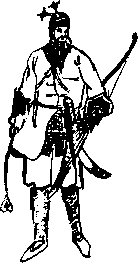

Ordu, kuyruğu hafif ezilmiş ama başı dimdik bir şekilde, gittiği değil de başka yollardan geçerek payitahta döndü. Biraz da başka şehirlerin ve köylerin ahalisi bu ihtişamı görsün istemişti Berke. Onlar da bu ihtişamı hem gördüler hem de beslemek durumunda kaldılar. Kasımın ilk günlerinde Âlempenah’ın Davutpaşa’dan kente gireceği haber alınmış, tüm kent, sultanlarını karşılamaya çıkmıştı.
İstanbul’un sefere aç hiziplerini epey bir zaman idare edecek bir sefer olmamıştı bu sefer. Ne yüklü bir ganimet ile gelmişlerdi, ki uzun süre kentin canlı-cansız mal satan pazarlarını mutlu etsin, ne de yenilerek gelmişlerdi, ki yaralarını sarmak için vakte ihtiyaçları olsun...
Hami’yle Hwace’nin yaptıklarını silmiş olan Berke, neresinden bakarsa baksın Osman Hulûsi’yi affedemiyor, sarayın içinde “dolandırıldım” diye bağırarak dolaşıyordu. Hele “seferden esir almadan gelmiş” denmesin diye Balkanlar’dan birkaç köyün halkını usturupluca esir ettirip ordunun önünde yürütmesi, Edirne pazarından da gizlice birkaç güzel kız satın alıp, kızıl ipek örtülü tahtırevanlar uydurarak şehre sokmak zorunda kalması, herkesten önce Berke’yı muztarib ediyordu. Balık tutmaya gitmiş de bir şey yakalayamayınca pazardan balık satın alarak evine dönmüş kötü bir balıkçı gibi hissediyordu kendini. Bu yüzden Osman’ı padişahlık şerefi ile oynamış sayıyor, ona iyice diş biliyordu. Hami’nin de Hwace’nin de hareket noktalarını anlıyor, bazen kızsa da, sonunda onlara sempati duyduğu zamanlar bile oluyordu. Osman’a ise bir ceza vermeyi kuruyor, uygun bir şey bulamıyor, kıvranıp duruyordu. Çağırıp zehirletmeyi veya boğdurmayı düşündüğü de oldu. Ayıp olacaktı. Ayrıca yeniçerilerin artık Osman’a soğuk durmasına rağmen “ne olur ne olmaz”lık bir durum her an gelişebilirdi.
Onun için ağırdan almaya karar verdi. Hwace’nin ettiklerini kendisinden başka kaç kişi biliyordu ki? Hwace’yi şeyhülislam yaptı. Bunun görünüşteki nedeni, daha seferdeyken kendisine verilen kitabı pek beğenmiş olmasıydı. Böylece yeni bir hukuk sisteminin temelleri atılmış oldu.
Osman bunlara tebessüm etmekle yetiniyor, kimselerle bir şey konuşmuyordu. Gureba ağalığı zaten birkaç gün sürmüştü, Berke’nin ısrarına,
“Bu şimdilik Osman, çok gençsin, yakında başka bir yere kaydırır yükseltirim” demesine,
“Sen de çok gençsin” diye cevap vermiş, Berke’nin kıpkırmızı olmasına sebep olmuştu. Oysa Berke’nin anladığı türden herhangi bir mana yoktu bu sözlerde.
O gün Berke, yakında öldürtmeyi planladığı Hami’yi de tekrar rehabilite etmeye karar verdi. Osman’ın iki kez elinin tersiyle ittiği Güç’ün bu kadar aşağılanmasını kendisinin de aşağılanması olarak algıladığı için artık enikonu hoşnutsuzluğunu göstermekten çekinmiyordu.
“Güç benim, ben Güç’üm... Gûç’ü böyle densizce nasıl aşağılar?” diye soruyor, bir cevap bulamıyordu. Eğer Osman sadrazam olmak istese yapacaktı. Hatta o gün savaş meydanında gözünün içine bakan askeri arkasına takıp da kendisini alaşağı etse, “Bu-da-Osmanlı” yahud “Yeni-Osmanlı" hanedanını kursa bile bundan daha iyiydi!
Osman’a gelince, Osman ne yapacağını pek kestiremiyordu. Elinde kılıç ve at var diye sultan muğber oluyor zannediyordu. Bir gün oturup çok kibar bir şekilde ikisini de geri verdi. Kılıcın hikâyesini anlattı:
“Berke, atan deden yadigârıdır, at ise sahibini özlemiştir, saraya girip çıkarken gözlerinden yaş akıtır, sana yakışır bunlar, bana değil. Emanetini al, hoşça sakla artık.”
Berke atla kılıcın geri gelmesine sevinmişti ama belli etmedi. Osman o gün saraydan çıkarken iki dostundan ayrı kalmış gibiydi, ama daha hafifti. Sultan, “peki şimdi neyle gideceksin” bile dememiş, Osman bir kira beygirine atlayarak Kadırga’daki evine yollanmıştı.
Berke birkaç gün sonra Kalmuk Elçisi’ni Hami’ye bağışladı! Kim padişah, kim kul, göstermek istiyordu.
Osman tüm bunları yine gülümseyerek karşıladı. Kimseye konuşmadı. Dedikodu yapmadı. Çabucak unutulmak istiyordu. Zudrig Mars ile olan kavgası bile Hwace’nin müthiş bir çalımıyla “atın üzerindeki boş zırhla babam da kavga eder” şekline dönüşmüştü. Hatta bir Ramazan gecesi at meydanında, halk için düzenlenen eğlencelerin birinde, Hwace’nin bir adamı, kötü bir ata bindirilmiş bir Alaman zırhının kellesini bir kılıç darbesiyle uçurunca insanlar derin düşüncelere gark olmuşlar, deneyin ve pozitif aklın yararına iman etmişlerdi. Tüm bu aşağılamalar on binlerce insanın hayatını kurtardığı içindi.
Öyle hemen unutulmadı. Göreceklerinin daha devamı da vardı ve asıl onlardan korkuyordu. Korktuğu iki şey de başına geldi. Birincisine yapacak bir şeyi yoktu. Berke, kütüphaneyi biraz tatil etmek pahasına da olsa Hami’ye Duvduvani kitabını buldurttu. Son bir kez Osman’ı kazanmak ve XVI. yüzyıldan XVII.’ye girmeye hazırlanan Osmanlı devletinin bir muhterem devletmeâbı, bir akıllı hissedarı, bir akl-ı selim sahibi hisseyâbı yapmak için yanına çağırtıp kitabı eline koydu. Okumasını istedi. Osman kısaca,
“Ben bu tür okuyamam sultanım,” dedi. Berke parmaklanın Osman’ın yakasına geçirdi, çılgına dönmüş, kendinden geçmişti: “Sen kendini peygamber mi zannediyorsun, sen hiç mi yalan söylemedin, hiç mi kötü bir şey yapmadın, hiç mi kimseye zarar vermedin?”
“Beli sultanım, ben istersem yalana iğnenin ucunda amut durdururum, çok kötü şeyler yaptım, çok adama zarar verdim, burada bulunmaklığım da cezamdır, kefaretimdir...”
Bu cevabı işitince Osman’ın kendisini tahmininden de çok küçümsediğini anladı.
Uzun gecelerde Hami bu tuhaf kitaptan müthiş güzel hikâyeler okuyor, hele Haç-Hilal Ovası zaferini o kadar canlı bir şekilde tasvir ediyordu ki, Berke asıl gerçeğin böyle olduğuna kesinlikle emin olmuş, bütün tarihçilerin eserlerini buradan bakarak yazmasını istemişti. Biri hariç hepsi baktı. O bakmayan da zaten Biçare Efendi idi. Efendi’nin daha savaş meydanında sıcağı sıcağına yazdığı eser ile Duvduvani, nedense çok büyük benzerlikler gösteriyordu.
Osman’ın başına hem gelen hem gelemeyen ikinci şey de bir şekilde birincisiyle ilgiliydi. Bir gün Sultan, Hami'ye,
“Yahu, hep geçmişi mi yazıyor bu kitap? Gelecekten bahseder bir yeri yok mudur?” diye sormuştu. Hami Tırtıl da bir sahife açmış sular seller gibi okumuştu... “Der beyan-ı tezevvûc-ü Osman Ağa ve Mehlika Sultan” bahsi Berke’nin ayaklarını yerden kesecek kadar nefisti. Gerisini dinlemeyi filan bir tarafa bırakmış, sadece başlığın hikmetine vurulmuştu. Tabii, niye daha önce aklına gelmemişti ki? Osman’ı damat yapacaktı. Bu ikisi birbirlerini el kadar çocuk iken dahi sevmezler miydi? Fikri yumurtlayan Hami bile ürperdi, Hankan’ın bu seferki şitah kazığı pek kallaviydi doğrusu, ister istemez göğsünün sağ yanını ovuşturdu.
Berke, bu fikrini Osman’a doğrudan söylemedi. Kızkardeşine bir fermanla müjdeyi verdi. Zavallı Mehlika Sultan’ın da ayakları yerden kesiliverdi: Ara sıra uzaktan görebilse de Osman onundu. Şimdiyse Berke Osman’ı her şekilde ebediyyen ondan alıyordu... Türlü zorluklarla Osman’ın Kadırga'daki evine indi.
Casusları bu haberi getirince Sultan aylardır uyumadığı en güzel uykuyu uyudu. Rüyasında çocukluk arkadaşı Osman ellerinin birini bırakıp diğerini öpüyor, ona sultanım veya Berke değil, “ağabey” diyordu, Osman’ın da siyah sakalları uzamış, mükemmel küçük kurtçuklarla dolmuştu.
Mehlika Sultan’ın gelişi geliş değil, ete kemiğe bürünmüş ayrılıktı.
Mehlika Sultan çekine çekine sormuştu:
“Kabul edecek misin Osman’ım?”
“Kabul edeyim mi sultanım? Ne dersin, doğruca söyle?”
“Osman’ım, benimle eğlenme, amma illa cevabım istersen damad odan hazırdır, Utarid’in odasını açtırıp, biraz temizleteyim!”
Osman halin vahametine rağmen kahkahalarla gülerek akıllı sultanını kucaklamıştı:
“Tabii hazırım, bak sana doğmamış bebek derisinden elceğizim ile yaptığım damatlık gömleğimi göstereyim...”
Sonra da şakacıktan, sultanın küçük ellerini ısırarak,
“Senin ne de güzel işlenebilecek bir derin varmış Mehlika,” demişti. Osman, o gece, çok sonraları bir Dede-Baba Efendi tarafından bestelenerek İstanbul sayfiyelerinde her terennüm edildikçe çok kalp sızlatan,
“Vuslatın demi olmaz meğerki iptida iftirak olsun
lâkin ayrılık olmasa hasretin de tadı yok”
şiirini yüreğinden kopan bir musiki ile söylemiş, Mehlika Sultan’ın kara gözleri dolup dolup boşalmıştı. Osman da ağlıyordu. “Nasip bu kadarmış Mehlika’m... Ne yapalım?”
Mehlika on yedi yaşından beri söylediği şeyi söyledi:
“Kaçır beni Osman’ım, seninle her yere gelirim."
“Mehlika’m, sizin sülalenizden her şey çıkmıştır ama kaçan bir sultan çıkmamıştır...”
“Osman, ben ilk olurum!”
“Mehlika’m, sultanlar her yerde yaşayamaz, kaçak dolaşamaz, alıştıklarından vazgeçemez, yeni âdetler edinemez..."
“Osman nerede ve hangi zamanı isliyorsan hazırım, senin için gözlerimin rengini bile değiştiririm.”
“Biliyorum,” dedi Osman başı önüne düşerken, “Ama ben yapmam...”
Sonra dehşetli bir tartışma yaşadılar, Osman’ın ne benliği kaldı ne bencilliği... Mehlika Sultan Osman denen yaratığı hırpalamaktan vazgeçtiği zaman, zihninin bir kıyısında “Hami gel beni kurtar” diyecek bir duruma gelmişti Osman. Yalnız, Mehlika’da abisinin sabrı yoktu, çünkü o korkular, helecanlar geçirerek saltanata hazırlanmamıştı, yazısı inci gibiydi ve bunu hep göstermişti.
Kara gece saçları, kırmızı kadifeden bindallı fistanı ile inanılmaz kıvrak bir tavır, bir oyundan sonra zil seslerinin, şal hışırtısının, gül yumuşaklığının ve kastanyet takırtılarının hiçbirinin işe yaramadığını görerek en sivri şitah dikenini boğaların boğacı Osman’ın sol tarafına şimşek hızıyla vurdu. Şitah saz gibi sallanmaz çünkü kökü bir ağaca lehimlenmiştir. Sallansan sallansan sen sallanırsın. Osman sallanmadı. Belki o da yalnızca küçük kara kafalı bir kurtçuktu. Ama kurtçukların hasıydı...
Sultan çıkıp gittiği zaman Osman uzun süre yerinden kalkamadı. Kulakları uğulduyor, tuhaf ışıklar görüyor, nedense yalnız omuzları üşüyor, ayakları ise alev alev yanıyordu. Şirin bir ses, “Benim” dedi. Kalbinden geliyordu ses:
“Ben şitah, ha bir gayret çek beni, yanıyorum, dayanamıyorum, lütfen...”
Doğruydu, yapılması gereken buydu. Osman şitahına acıma ve sevgi ile baktı, sonra iki eliyle birden asılarak çıkardı onu.
Sabah uyandığı zaman Osman, Osman değildi. Gücü reddetmiş ama bir kez daha ve son defa ölmüştü. Osman kıvırcıkça saçları ile pamuk gibi sakalını dışardan seyrediyor, şitah çıkardığı yerde, ucunda kanlarla, bırakıldığı gibi duruyordu.
Kapısı hafifçe itilince içeri giren uşağa baktı. Adam zaten telaş içindeydi. İyice karıştı, uzun süre konuşamadıktan sonra,
“Oğlunuz... şey... babanız hasta... haber geldi," dedi.
Osman Ördekkasap’a gittiği zaman doğruca İvaz Paşa’nın yanına çıktı. Paşa ölüm döşeğindeydi. Osman’ı görünce hiç şaşırmadı. Hâlâ güçlü ve boğuk sesiyle,
“Üçüncü defa da öldün mü Osman?” diye sordu.
Osman tevazu ile başını eğdi. Babasının aslan pençesini andıran ellerini öptü. Paşanın kollarında öyle bir güç vardı ki, olur da bu güç başkasına zarar verir diye paşanın isteyerek öldüğünü düşündü Osman. Paşa, başkaları duymasın diye fısıldayarak sordu: “Mars başlığını çıkarınca ne gördün?”
“Hiçbir şey, Paşa Baba...”
“Hiçten daha çok şey olur mu a Osman, her şeyi gördüm desene!”
Osman babasını şimdi çok daha iyi anlıyordu. Yaşlı adam ilk kez inledi:
“Ben üçüncüde kaldım Osman, ama kalmasam da sen olmayacaktın, Allah’a bin şükür,” diyerek mutlu bir şekilde öldü.
Osman, her çocuk gibi anne babasının birbirlerine âşık olmasını hiç anlayamamıştı. Her ikisi de kendisi için var zannediyordu. Harem tarafından gelen çığlıklarla kendine geldi. Annesi Mahmure Hatun da Osmanlı kadınının ebedi uykusunu seçmiş, paşasıyla beraber ölerek güçlü bir tesbitte bulunmuştu. Çok sonraları adına hürmeten “mahmurekom” diye bir acayip şey vaki olacaktı ama bilici, görücü olmak başka, bilmediği nesneleri görünce adını söyleyememek başka... Osman bunu bilemedi tabii... Baba evini babasının kirpi saçlı uşağı Basri’ye teslim etti.
“Geldiğimde her şeyi hazır isterim, ev sana emanet” dedi.
Paşanın kılıçları arasından en kötüsünü, en perişanını seçerek aldı ve evden çıktı. Cenaze törenlerine katılmamaya karar vermişti: Şimdi değirmenden fırlamış gibi duran bu haline bakıp “Un Baba” veya “Değirmenci Dede” tarîki diye bir şey icad etmeye kalkarlar, yine nizam-ı âlem muhtell olurdu. Nizam-ı âlem muhtell olunca, insanlara da olan oluyordu. O gün Allah’ın hiç bir kulunu mürid olarak kabul etmemeye karar verdi.
Hwace’nin sistemi ise gün geçtikçe gelişiyor, Hami Tırtıl’ı, hatta Berke’yi bile ürküten sonuçlar veriyordu. Duvduvani kitabının hiç yazmadığı konularda Hwace haylice mesai ile malumat üretiyor, sonra bunları sayfa sayfa getirerek, kitaba eklenmesine ferman sadır olmasını sağlıyordu. Basit bir ihtiyaçtan doğmuştu sistem: “Suçlu”yu suç işlemeden önce tesbit ve gereğini icra ihtiyacından. Kaderin garip bir tecellisi olarak, Hwace bunu “Testiyye” sistemi diye adlandırmıştı. “Testi kırılmadan harekete geçmek," bütün espri buradaydı işte. Diğer fıkıhçıların akıl edemediği buydu... Onlar öyle yoğurt çanağı gibi oturuyor, suç teşekkül ettikten sonra göstermelik bir iki şey yapıyor, o zaman bile, suç sabit olmuş mu olmamış mı, yok şuhud-u hal, yok beyyine, ikrâr her ne karın ağrısı ise... bunlarla uğraşıyorlardı. Oysa Hwace gizli ilimlere vukufu sayesinde, kendi yazdığı ilm-i kiyafe kitabını kullanarak kim suçlu anında tesbit ediyordu.
“Alnı dar olan avret meyyaldir zinaya,
yatınla falakaya çekile sopaya,
ikrâr eylemeyenin kârı dayaktan ölmektir,
ikrâr eyleyenin hakkı kuma gömülmektir”
gibi bir cümleyi, hiç aramadan kendi kitabından buluyor, alnı dar ne kadar (sahi ne kadar dar?) kadın varsa hepsi temiz bir dayak yiyordu. Alın ne kadar dar? Hwace buna karışmazdı, buna işlerinde müstakil kadılar karar verirdi. Sonuç olarak, bütün kadınlar alınlarını geniş gösteren, yan taraftan pamuk dolu yaşmaklar takınmaya başladılar.
“Burnu iri adamın, muhakkak iridir zekeri,
zekeri iri olan mutlak konuşur ileri geri"
ifadesinden dolayı, ne kadar kocaman burunlu adam varsa göğüslerine kadar sakal, bıyık bırakmış, burunlarını küçük göstermeye çalışıyorlardı. Bu en kötü, en tehlikeli maddelerden biriydi çünkü; “ileri geri" ne demekti? Hiç olmazsa Hwace’den evvel belirli bir suça belirli bir ceza konmuş, millet çekiyordu. Şimdi ise suç tanımlanmadığı gibi ceza da yoktu. Kadılar kafalarına göre takılmaya başlamışlardı. Bazı densizler ise balmumundan yapılma otuz kırk santimlik burunlar ile dolaşıyorlar, Hwace’nin Habeş’ten gelen zürafası su içip kalkıncaya kadar dayak yemeyi erkeklik yolunda bir marifet sayıyorlardı. Yiğitlik başa bela bir şeydi. Kaş göz, el ayak, kelle kulak... Ne de olsa insan bedeninin bir sınırı var. Hwace ilk kez, yeşil giydiği için öldüresiye dövülen bir Yahudi’nin dilekçesini görünce meseleye aydı. Adam yemin billah kırmızı giydiğini söylüyordu. O çıfıta inanmadı ama sahi ya bu kılık kıyafet mevzuu çok büyük, çok azim bir mevzuuydu. Hemen yeni sahifeler ekledi Duvduvani’ye. Bu sayfalar çok sonra apokirifal bulunacak, ayıklanmak istenecek ama Duvduvani gibi bir yalan dolan manzumesi içinde bu imkânsız olacaktı. Bazı sahifelerin, Duvduvani’den kopya çeken diğer kütüb-ü fîkhiyeye girdiği de filvaki bir hakikattir. En hoşu, Hwace’nin varolan kavânîn ve nizamatı da istediği, canının çektiği gibi kullanmasıydı. Taa müteferrikaların fesadı sırasında çıkarılan maddeler de pekâlâ işe yarıyordu. Mesela, bir madde “Enderun ve Birun’un hiçbir tarafında dört müteferrikadan fazlasının bir araya gelmesi, huzur ve sükûnu bozması mümkün değildir, meğerki vakvak ağacında bir araya geleler” mi demiş, Hwace hemen “sarı mest giyip dolaşanlar müteferrika olmuş ve sükûnu bozmuş sayılırlar” diyor, o hep başıboş bıraktığı kadılara bu kez sevabına hangi fetva kitabının hangi kısmına bakarak ceza vereceklerini de emir ile bildiriyordu. Bohçacıların konaklara girmesi mi yasaklanmış? “Hamamda peştamal takan avretler bir nevi bohçacıdır, yoksa neyi sarıp sarmalıyorlar?” diye bir kıtır atıyor, bütün payitaht inliyor, kimse bir şey yapamıyordu.
Berke Hwace’nin performansından o kadar memnundu ki Anadolu ve Rumeli Kazaskerlerini bile kaldırdı.
“İyi yaptınız haşmetlüm,” diyordu Hami, “adları bile bir şeye benzemez, kazdan asker mi olur... heh... heh... "
Osman Hulûsi Beyefendi Ağa, bir kış sabahı güneş doğarken ve her taraf kar altındayken Ayasofya’nın minarelerinden birine tırmandı. Bu XVI. yüzyıl kâbusunu ve bu fena tahayyül edilmiş payitahtı, kurtlu sakallı Berke’yi, kurtlu beyinli Hwace’si ve artık yarkalaşıp patkanlaşmış bir kurttan başka bir şey olmayan Hami’si ve irili ufaklı diğer yaratıkları ile baş başa bırakarak terk etmeye karar vermişti.
Karın temizlediği hava ciğerlerine doluyor, merdivenlerden çıkarken içini sızlatıyordu. Belki içini sızlatan başka şeyler de vardı. Yüreği öldüğü için bilemiyordu tabii. En sonuncuya, yani üçüncü şerefeye kadar çıktı: Cihan payitahtı kar altında çok, çok güzeldi. Yüzünü taa uzaklardan yine karlı tepeleri görünen Uludağ’a, Osmanlıların vatan-ı aslisi olan Bursa şehrine doğru döndü. Sol arkada gümüş kıvrımlar ile Karadeniz’e doğru akan Boğaz, sağ arkada şehr-i Stanbul, İvaz Paşa’nın evi, daha yakınlarda Abram Paşa Sarayı vardı. Bembeyaz bir kaftan giyinmiş, bembeyaz sakalı ve saçı ile Osman Hulûsi bu manzaraya pek yakışıyordu. Hafif bir yel yakalayınca,
“Ya Allah ya Fettah! Ben bu diyardan gider oldum, oldum asumana perrân, istikamet magrib, niyyetimiz Frengistan, işimizi onara hazret-i Yezdan” diyerek kendini boşluğa bırakıverdi.
Yavaş öğrenen meşâyihden olmak hasebiyle, boşluğun aslında ne kadar dolu olduğunu pek düşünmedi, önce fizik kanunları gereğince azametli bir kar tanesi, henüz uçmayı bilmeyen bir kardan adam, açıkçası beyaz bir mermer parçası gibi düştü, sonra Muhayyil-i Meçhûl’ün koyduğu kanunlar gereğince yükseldi. Sağ omzuna nereden çıktığı belli olmayan bembeyaz bir güvercin, sol omzuna yeşil gözlü bir kara karga kondu. Bu kadarını tahmin ediyordu Gerçek Osman Beyefendi, bir tarafında günahları, diğerinde sevapları.
Karga yılışık bir sesle,
“Aşkolsun Osman, bizsiz nereye?” dedi.
Güvercin hiç sesini çıkarmadı. Osman Hulûsi ne olacağını üç aşağı beş yukarı kestirebiliyordu. Bu evrendeki insanlar şimdiden, minarenin dibindeki bedeni etrafında, toplanmışlar, karlara karılan kızıl kanında kan falına bakmışlardır bile. Dönüp bakmadı. Baksaydı hiçbir şey göremeyeceği için epey şaşıracaktı. Müritsiz şeylerin istihbaratı zaten zayıf olur. Karga ile güvercin de bir şey demediler. Bazen aynı gemide yolculuk eden ak ile kara, kedi ile sıçan, birbirlerine karşı pek anlayışlı, pek barışık olur. Öylesi bir zamandı.
Osman Hulûsi’nin can sefinesi suyunu çekmiş bir karaya olanca hızıyla oturduğunda, yerlere sürten burnunun tam Hwace’yi memnun edecek boya indiğini düşündü Osman; sürtmenin şiddetinden kopan göğüs kıllarının acısı ise gerçek gibiydi. Hayal âleminin insana verebileceği gerçeklik duygusunun gücüne hayret etti. Bu duygu bazen gerçekler âleminin insana sunduğu hayal duyguları kadar güçlü olabiliyordu. Bu çarpışmadan biraz önce, güvercin bir yana karga bir yana savuşuk uçarak omuzlarını terk ettiler…
Gözlerini açtığında, başında bir sürü insanın toplandığını gördü. Sorgucu melekler!
"Yav bunlar iki tane değil miydi? Amma çokmuşlar!” diye düşündü.
Gölge keçi sakallı, at kuyruklu bir münkir,
“Beybaba, iyi misin?" diye sordu.
Şişman ve epeyce de cıbıldak bir nekir,
"Ayol bu yaşta adama dublörlük yaptırılır mı? Anladık tarihi film çekiyorsunuz ama...” dedi
Osman Hulûsi bazı kelimeleri anlamadı Altık ne yaptıysa boynunda ipi ile dolaşan idamlık bir münkir,
"Yav bilir bilmez konuşmayın, ne dublörü, tanımadınız mı Hüseyin Kabirci o! Minareden düşme numarası ile yine dikkatleri üşüme çekmeye çalışıyor!" dedi.
Demokratik bir oylama ile bu görüş ağır basmış olmalı ki, ertesi günkü varakparelerde bu vardı…
Osman ayağa kalktı, gerindi, kanlı göğsüne hayretle baktı, biri.
"Ayol bunun kılıcı da var!" dedi.
“Bazı şeyler bir evrenin minaresinden diğerinin zeminine düşsen de değişmiyor, memleket insanı işsiz güçsüz, dedikodu sever, akıl fikir yürütmeye bayılır, görmeye veya başka bir veriye de ihtiyacı yoktur, sonuca bakarak bir şeyler söylemesi kâfidir," diye düşümlü Osman Hulûsi Beyefendi Ağa.
Bir yaz sıcağında gele gele yine İstanbul'a gelmişti:
“Armut gibi dibine düştün Osman!"
Her türlü değişikliğe rağmen Ördekkasap’taki evi buldu. Yol boyu gördüğü hiçbir şeye şaşırmadı, müritsiz de olsa nihayetinde bir şeyh idi. Şaşırmak Osmanlılar için zaten bir züldü. Osmanlı şeyhlerine ise hiç yakışmazdı.
Evin yanında yöresinde bir garip binalar var idi, ama ipini çekince dış kapı hemen açıldı. Her şey pek tanıdıktı Uşak Basri koşarak geldi. Osman kısa bir konuşmadan sonra dört yüz yıllık hır zıplama yaptığını anladı.
“Basri, sen nasıl yaşadın bunca zaman?"
"Ev sana emanet dedin ya bey..."
Eh, mantıklı bir açıklamaydı. Emanetin sahibi gelir alırdı… Gelmişti işte.
"Basri, bir nevi açım. "
Paşa babasının hep oturduğu odaya yöneldi...